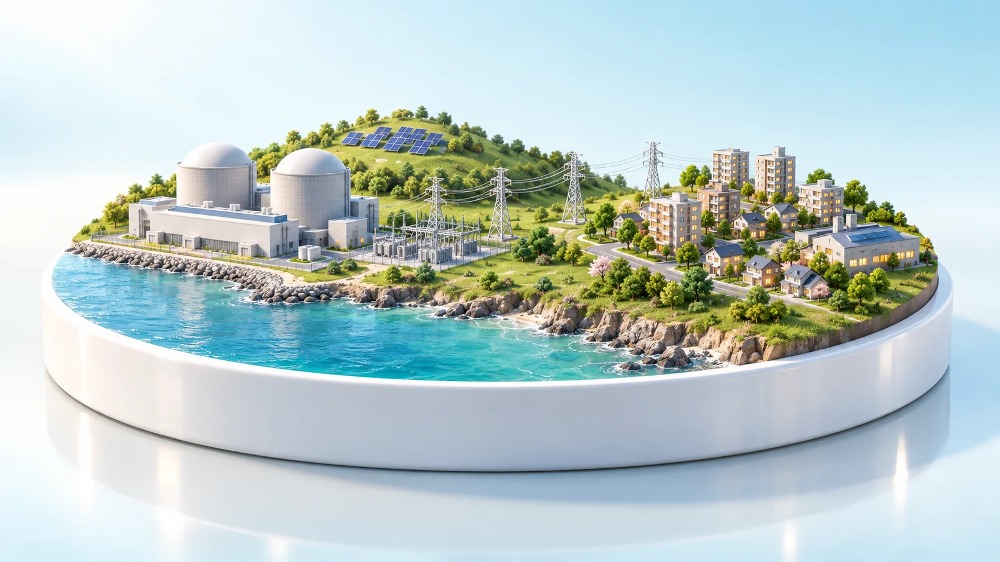
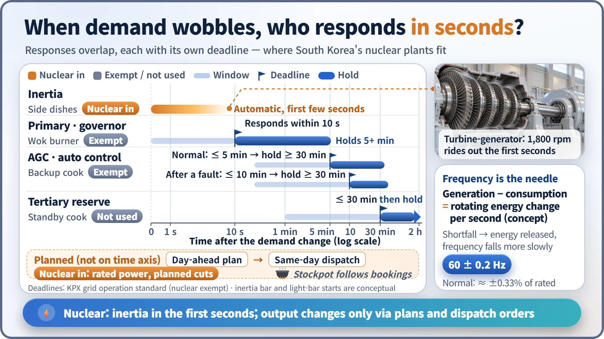
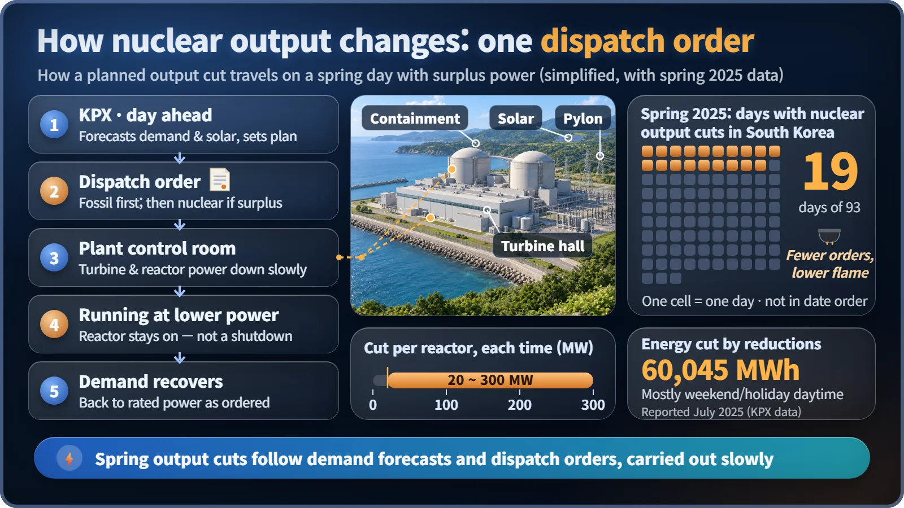

Plant Operation, Control & the Grid · 228
The Soup Pot Doesn't Change Its Flame for Every Order — How Nuclear Plants Respond When Electricity Demand Changes
Nuclear plants help through inertia in the first seconds, sit out automatic output control, and change output only through planned dispatch orders.

On the grid, a change in demand is handled in slots of seconds, minutes and hours, and a nuclear plant's response is the share of those slots it takes on. In South Korea, nuclear plants help automatically through rotating inertia in the first few seconds, are exempt by rule from automatic output control, and change output only through day-ahead plans and dispatch orders. [1]
"On a midsummer afternoon, when millions of homes switch on their air conditioners at once, does the nuclear plant crank up its output right then?" In South Korea, most nuclear plants stay put, but they aren't completely idle either. The answer is easiest to see from the grid as a whole.
Electricity is used the moment it's made
Because electricity is hard to store, the grid must match production and use at every moment. The needle showing that balance is frequency, how many times per second alternating current swings back and forth:
Power generated − power used = how much the rotating machines' kinetic energy grows or shrinks each second
A shortfall drains energy from the generators' spinning rotors, they slow slightly and frequency drops; a surplus does the opposite. South Korea's standard is 60 Hz, and a government notice requires the grid to stay within 60 ± 0.2 Hz under normal conditions, a band of just 0.33%. [2]
Into the kitchen of a busy soup restaurant
When a large group walks into a soup restaurant at lunchtime, plated side dishes go out first, with no order needed but limited in number. Seconds later the wok burner heats up; within minutes a backup cook is called in, then the standby cook. The big cauldron of bone broth doesn't change its flame for every order: how much to simmer was set the day before from the reservation book.
| Kitchen | Grid | Deadline | South Korean nuclear |
|---|---|---|---|
| Plated side dishes | Inertia of spinning generators | First few seconds (physics) | Takes part automatically |
| Wok burner | Governor (primary reserve) | Respond within 10 s, hold at least 5 min | Exempt |
| Backup cook | Automatic generation control (AGC) | Deliver within 5–10 min, hold at least 30 min | Exempt |
| Standby cook | Tertiary reserve | Within 30 min | Not used |
| Cauldron and reservation book | Day-ahead plan and dispatch orders | Hours to a day | Holds rated power; planned reductions when needed |
In the first few seconds, nuclear pitches in on its own
A large nuclear turbine-generator is a very heavy rotor turning 1,800 times a minute. When demand jumps, every generator on the grid slows very slightly and releases rotational energy as electricity. No one presses a button; it's physics, so nuclear plants take part automatically. But it's only a buffer that slows the frequency drop and buys a few seconds. Solar and wind connect through power converters and lack this rotating inertia, so as renewables grow, large rotating generators are getting fresh attention for this role.
No nuclear in the 10-second and 10-minute slots
Under the Korea Power Exchange's grid operation standard, governors must respond within 10 seconds and hold output for at least 5 minutes, and AGC must deliver ordered output within 5–10 minutes and sustain it for at least 30 minutes. Gas and coal plants, hydro, pumped storage and battery storage mainly fill these slots. The same standard says nuclear generators may be exempted, and South Korea's plants are. That is a division of roles, not proof that nuclear "can't" change output: in France, nuclear plants follow demand every day. [1] [3]

The way nuclear output changes: a dispatch order
Nuclear output changes in the planning slot. The Korea Power Exchange forecasts demand a day ahead, builds a generation plan, and issues dispatch orders on the day; most of the time nuclear plants are told to hold rated power. Spring has changed that. In the light-load season, solar pours in on weekend afternoons while demand hits bottom. Fossil output is usually cut first, and if power is still left over, nuclear plants are ordered to lower output, an output reduction, not a shutdown.
According to press reports citing KPX data, nuclear output was reduced on 19 of the 93 days of the spring 2025 measures period, by roughly 20–300 MW per reactor each time, totaling 60,045 MWh. Operators lower turbine and reactor output together slowly, within set rate limits, and the reactor keeps running at lower power. [4]

Key takeaways
- Frequency is the grid's balance needle; South Korea keeps it within 60 ± 0.2 Hz in normal operation.
- Nuclear plants join automatically only through inertia in the first few seconds.
- They are exempt by rule from governor and AGC duties: a division of roles, not a physical limit.
- Their output changes through day-ahead plans and dispatch orders, including planned spring reductions.
- An output reduction is planned operation, not a sign of trouble.
In 2024, nuclear made 32.5% of South Korea's electricity. When the cauldron gets that big, the way the kitchen runs is bound to change little by little. [5]